Services Cube Company Manual
Copyright © 2018 Services Cube. All rights reserved.
Introduction
Overview
What is Services Cube
Services Cube is in the business of getting qualified field-based service providers for various services ranging from cleaning services, security needs, appliances repairs,gardening and so on. The Services Cube Web App for companies makes it easy for scheduling, assigning jobs, tracking productivity. Most importantly, Services Cube is the perfect bridge between you and your customers.
In Services Cube,you can do the following, and more:
- Full-featured dashboard gives valuable insights and a more accurate picture about your mobile workforce.
- Seamless job scheduling and manage your workforce intelligently.
- Centrally manage all your workers (full-time/part-time/contract) and their key data you need including certifications,availability,etc.
- Keeping track of your worker via real-time visual map.
- Providing customers with services which consist of Securities, Plumbers, Gardeners, Trailers,Electricians and Cleaning and so on. Just have it the way you like.
- Service price, tax and discounts settings can all be modified easily according to your needs.
- Manage your assets with simple clicks and bind them with services.
- Simple yet accurate online billing & invoice system saves you tons of time.
Introduction
Logging In
Overview
To use Services Cube Web App, you must be a member of our service companies. We will provide you with the necessary credentials to set up as a company admin. Based on that, below are some brief instructions that will help you better understand how to log in.
Basic Steps
How to access:
Access the Services Cube Web App via the following URL:
Logging in:
Once you have opened the website, the login screen appears. Provided that you already have the company name, email address and password, here's what you should do to log in correctly.
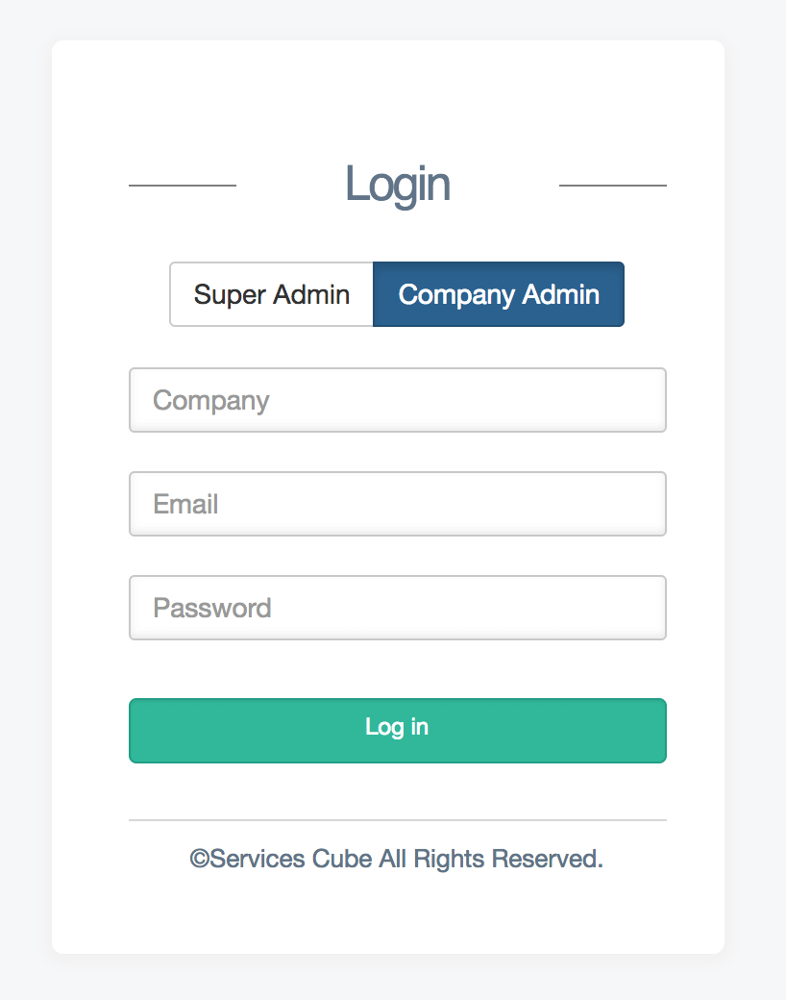- Choose "Company Admin" first.
- Then, fill in all the blanks in the login page including your company name, email address and password.
- If so, you are good to go now.
Introduction
Quick Start: How to set up
Overview
To get you started, this manual will guide you through the basic setting up process step by step. Fear no more, our platform is easy and flexible to operate.
Basic Steps
- Step 1: Add actors (Actors are job roles of your workers)
- Step 2: Add services (Including primary services and secondary services)
- Step 3: Add service assets (Assets used for services)
- Step 4: Bind the necessary actors and assets with services
- Step 5: Add worker accounts and customer accounts of your company
Note:
These are the basic steps to get your system up and running. Given that other functions are based on these data, they just won't work well without these basic steps. So, make sure to read through the following process.
Step 1: Actors
Overview
Description
Suppose that you've got workers with different job roles such as plumber,security and gardener. So the first thing you need to do is add actors according to your company's situation.
Note:
- Each actor has two parameters: Actor Name, UI Theme.
- Actor Name: Just name it the way you want according to your workers' job roles. You can still change it afterwards.
- UI Theme: We've got several UI themes for you to choose for different actors. Each theme contains a series of different pictures that will be used in the mobile apps. So instead of choosing one picture, you are basically choosing a series of pictures.
Step 1: Actors
Add Actors
Basic Steps
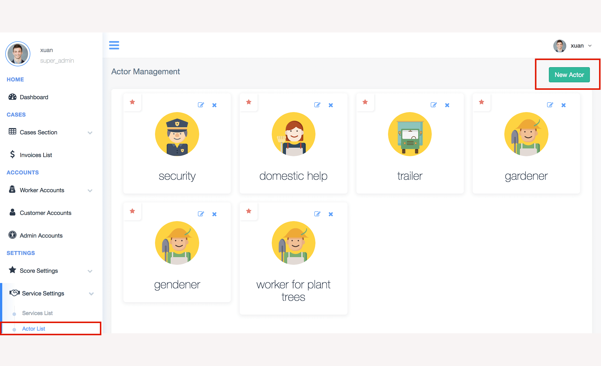 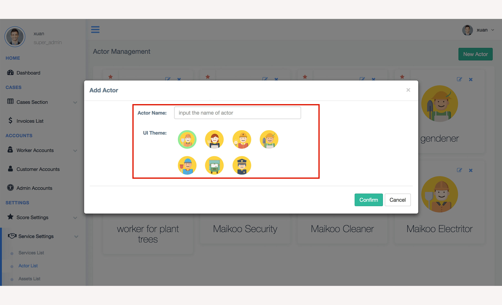
- Choose "Service Settings" from the sidebar.
- Click "Actor List" from the dropdown menu of "Service Settings".
- When you click the "New Actor" button at the top-right screen, it will prompt you to enter the required information within a modal dialog box.
- Then, input the "Actor Name" and choose the "UI Theme" you want.
- And don't forget to click "Confirm" to save it.
Step 2: Services
Overview
Description
Now that you've set up actors, it's time for us to set up services. It's natural that workers with different job roles (Actors) can provide different types of Services. For example, you'd like to provide Security Services which include day security and night security. So you should add "Security Services" as primary service and "Day Security" "Night Security" as secondary services.
"Service Assets" is like your company's materials management system. You can keep record of the asset name, price, amount and bind services with it so that you can search for inventory status in real-time.
Note:
- Each primary service may contain several secondary services. Secondary services can not exist without their primary service.
- Services can be real-time services like security services or reserved services like cleaning services.
- Setting charge option is also available.
- Like Actors, you need to choose the UI theme too.
- Service price, tax and discounts settings can all be modified easily according to your needs.
Step 2: Services
Primary services
Overview
Primary services are the primary category of services. Whether it is schedule option, or charge option, or service description that will be used in the apps, or UI theme, primary services take full control.
Contents
- Service Name: name the service you want to provide
- Schedule Option: choose "real-time" or "reserved" according to the service features
- Charge Option: choose "charge" or "free" according to the service features
- Service Description: a description of the service you want to display in the apps
- UI Theme: Each theme contains a series of different pictures that will be used in the mobile apps.
Add primary services
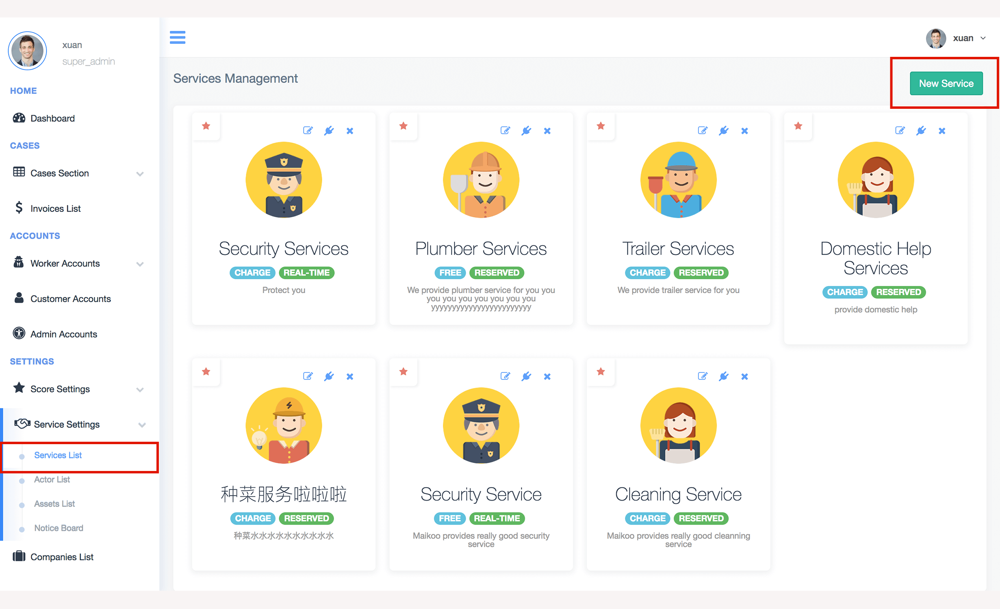 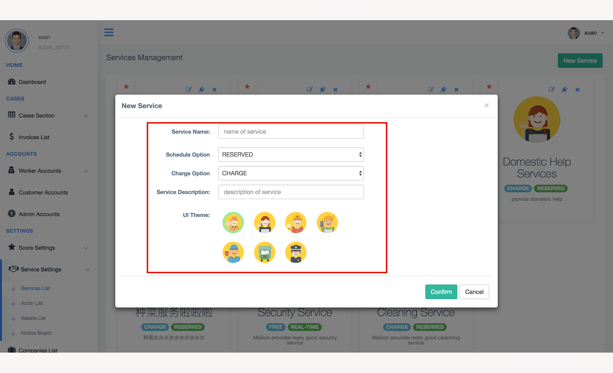
- Choose "Service Settings" from the sidebar.
- Click "Services List" from the dropdown menu of "Service Settings".
- When you click the "New Service" button at the top-right screen, it will prompt a modal dialog box.
- Then, enter the required information.
- And don't forget to click "Confirm" to save it.
Step 2: Services
Secondary services
Overview
As you know, secondary services can not exist without their primary service. Let's say that you've already added primary services and looking forward to set up secondary services. Secondary services take control of more detailed settings such as prices,tax rates and discounts. Do note that one primary service may contain two secondary services with different prices for example.
Contents
- Service Name: name the secondary service you want to provide
- Service Price: price of secondary service
- Tax Rate: tax rate of secondary service
- Discount: discount of secondary service
Add secondary services
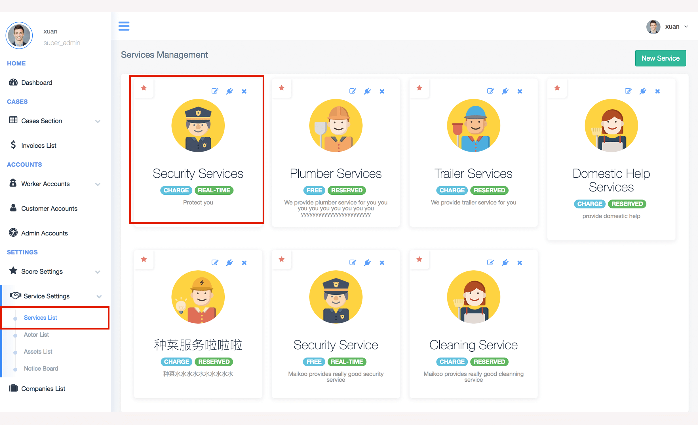 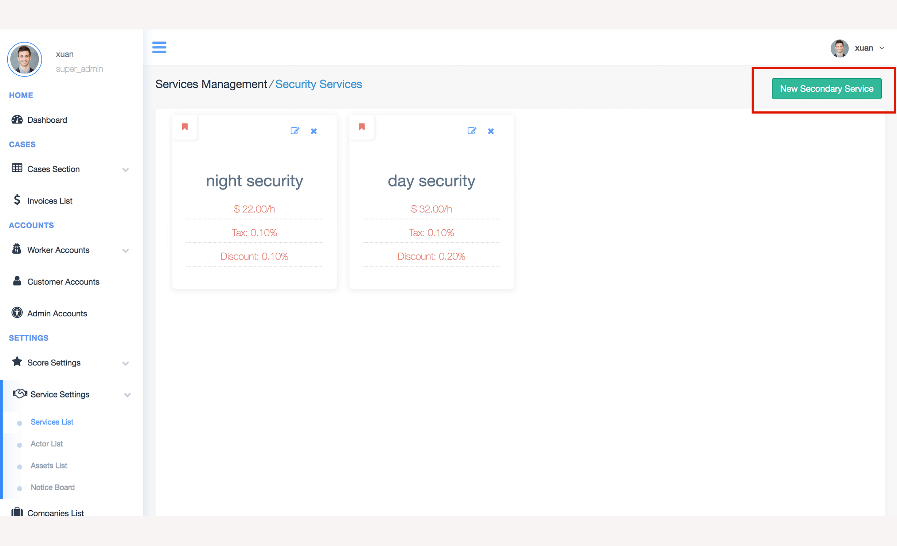 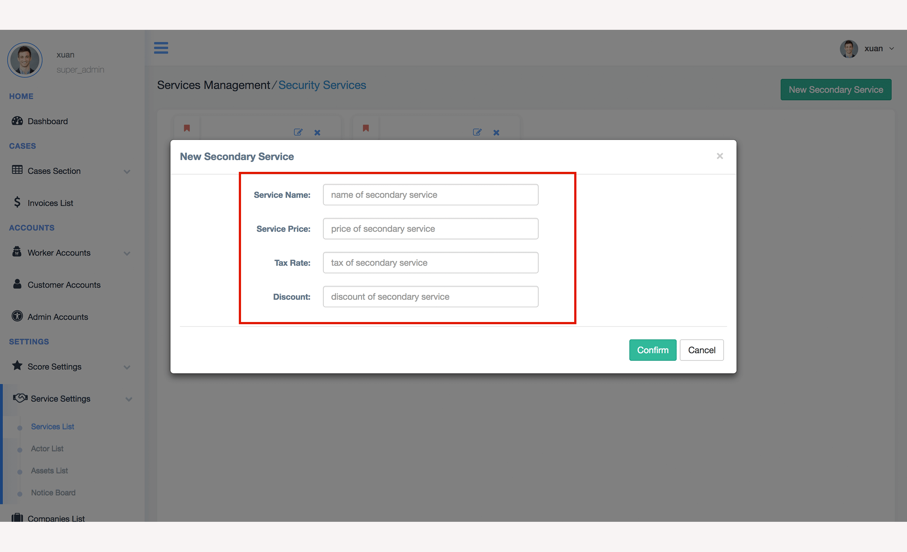
- Choose "Service Settings" from the sidebar.
- Click "Services List" from the dropdown menu of "Service Settings".
- When you click the primary service panel that you'd like to add secondary services to, it will enter the secondary services screen.
- Then click the "New Secondary Service" button at the top-right screen, it will prompt a modal dialog box.
- Enter the required information.
- And don't forget to click "Confirm" to save it.
Step 2: Services
Services Assets
Overview
"Service Assets" is like your company's materials management system. You can keep record of the asset name, price, amount and bind services with it so that you can search for inventory status in real-time. The amount of assets changes when assets being used during the working process.
Contents
- Asset Name: name of the asset
- Price: retail price of the asset
- Total Count: total count of the asset (you can always change the total count later)
Add assets
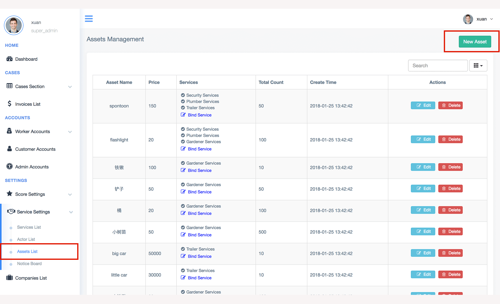 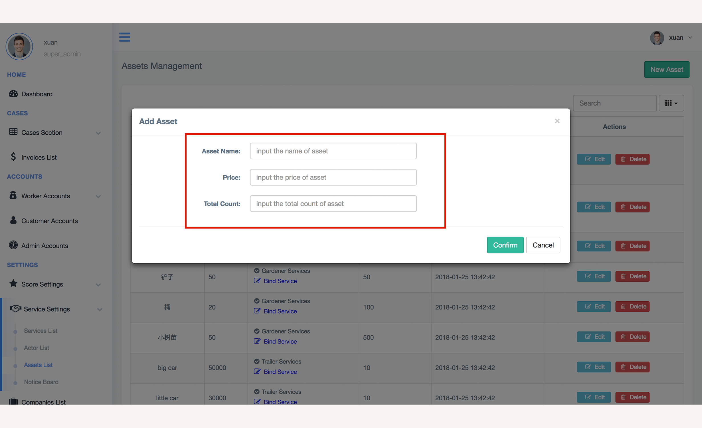
- Choose "Service Settings" from the sidebar.
- Click "Assets List" from the dropdown menu of "Service Settings".
- Then click the "New Asset" button at the top-right screen, it will prompt a modal dialog box.
- Enter the required information.
- And don't forget to click "Confirm" to save it.
Step 3: Binding
Overview
Description
Now we've set up actors, services and assets, but they are not connected. It's like we've got workers just standing in the warehouse without assigning services to them or giving them the right tools.
For starters, there are two things that need to be done:
- Bind actors with services.
- Bind assets with services.
Step 3: Binding
Binding Actors
Overview
It's highly recommended that you bind actors right after you've added new services. Not only it's more efficient, but also can avoid forgetting about binding actors.
Bind actors
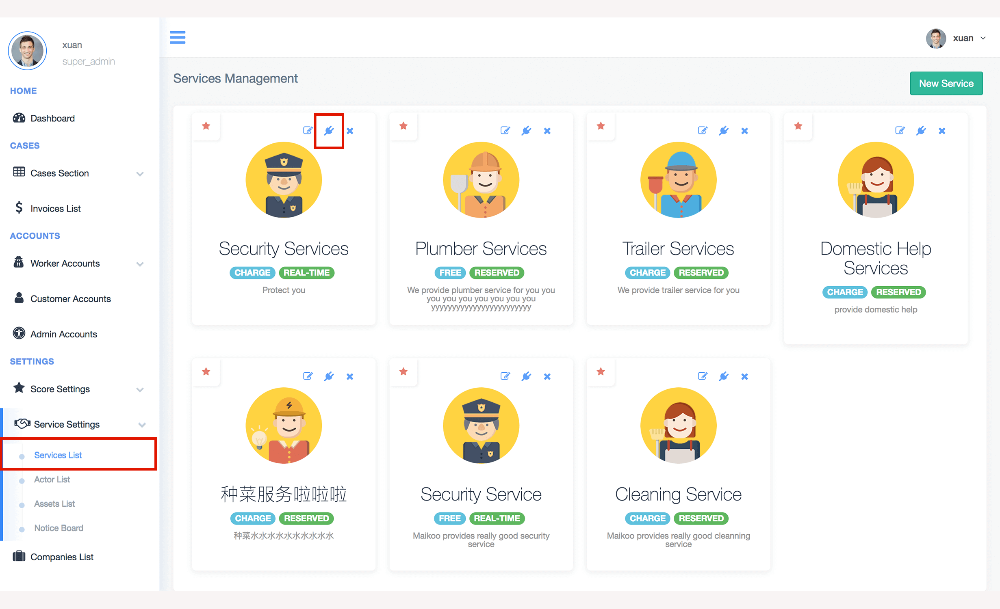 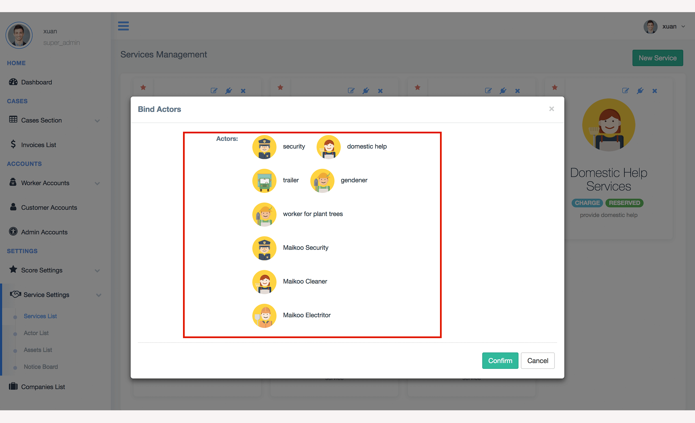
- Choose "Service Settings" from the sidebar.
- Click "Services List" from the dropdown menu of "Service Settings".
- Then click the plug-shaped button in the primary service panel, it will prompt a modal dialog box.
- Choose the actors that you want to bind.
- And don't forget to click "Confirm" to save it.
Step 3: Binding
Binding Assets
Overview
Assets can only be used in the services when you have bound assets with services. Only in this way can the amount of assets changes through the working process and assets panel are displayed in the apps.
Bind assets
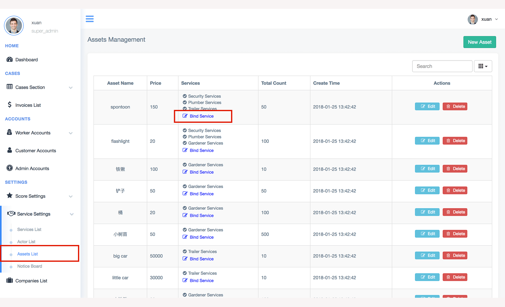 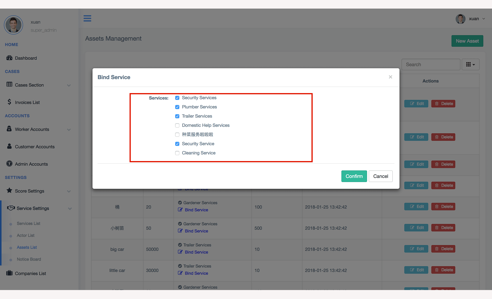
- Choose "Service Settings" from the sidebar.
- Click "Assets List" from the dropdown menu of "Service Settings".
- Then click "Bind Service" in the assets table, it will prompt a modal dialog box.
- Choose the services that you want to bind.
- And don't forget to click "Confirm" to save it.
Step 4: Accounts
Overview
Description
Accounts data is vital to company. In Services Cube, company admin can view, edit and create both worker accounts and customer accounts.
For starters, here's some tips for:
- Creating a new worker account
- Creating a new customer account
Step 4: Accounts
Worker Accounts
Overview
Worker accounts contains everthing related to workers such as personal info, case info, score logs, leave logs and certifications, etc. But creating a new account is simple and easy, you'll only need to input a few necessary info.
It includes the following:
- Job Role: choose from the actors you created before
- User Name: input the name of the worker
- Email Address: input valid email address
- Password: input an primary password (password can be changed later)
Basic Steps:
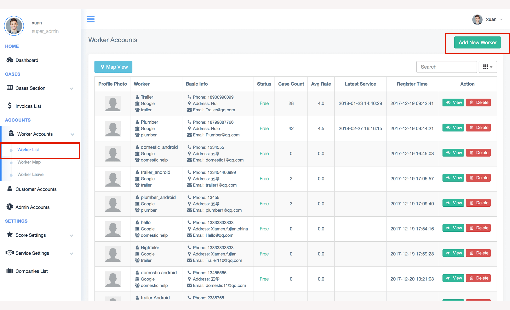 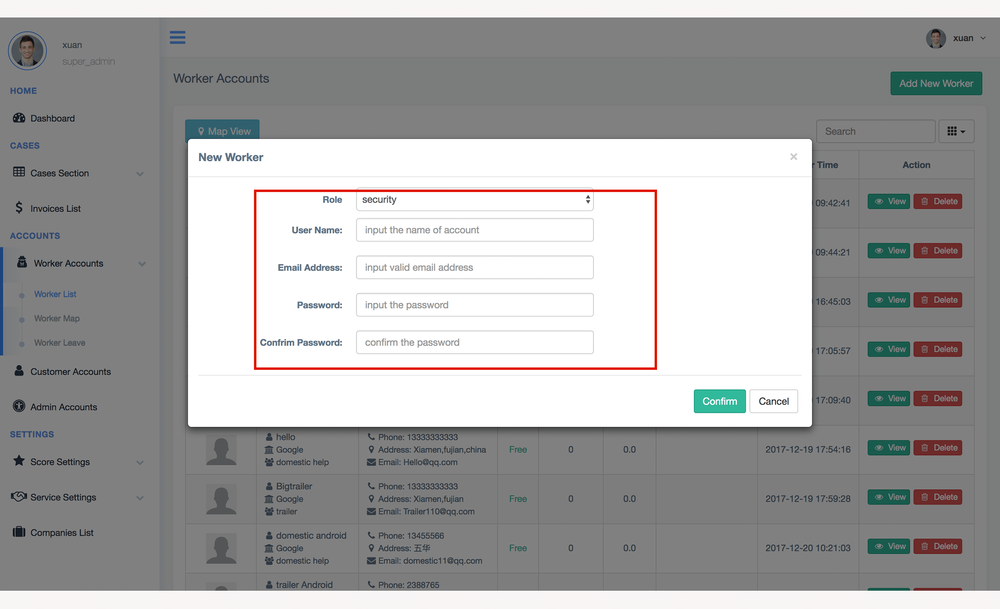
- Choose "Worker Accounts" from the sidebar.
- Click "Worker List" from the dropdown menu of "Worker Accounts".
- Then click "Add New Worker" at the top-right screen, it will prompt a modal dialog box.
- Enter the required information.
- And don't forget to click "Confirm" to save it.
Step 4: Accounts
Customer Accounts
Overview
Customer accounts contains everthing related to customer such as personal info, case info, score logs, leave logs and credit card info, etc. But creating a new account is simple and easy, you'll only need to input a few necessary info.
It includes the following:
- User Name: input the user name of the customer
- Email Address: input valid email address
- Password: input an primary password (password can be changed later)
Basic Steps:
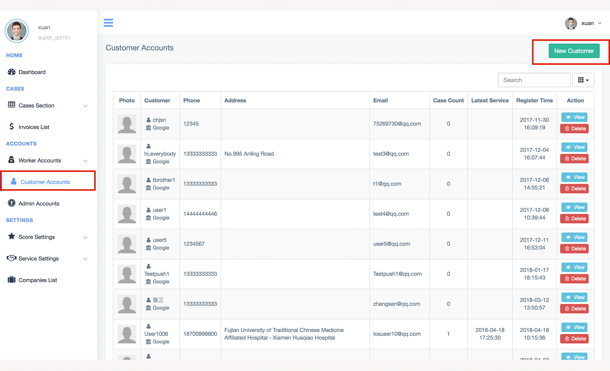 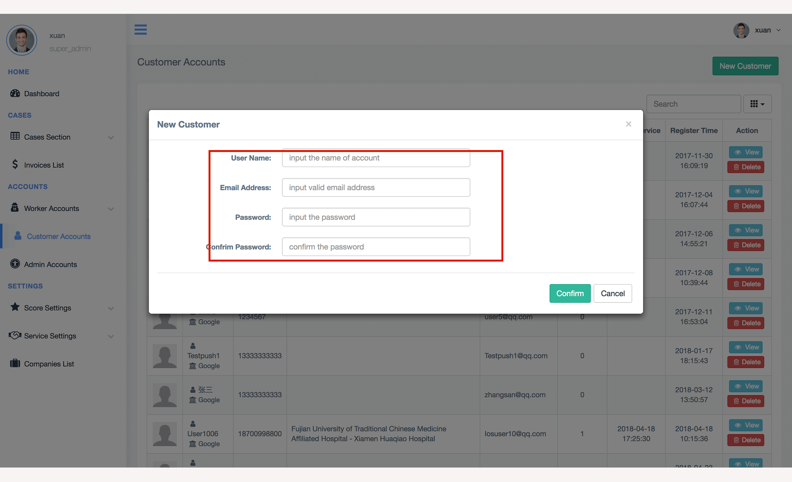
- Choose "Customer Accounts" from the sidebar.
- Then click "New Customer" at the top-right screen, it will prompt a modal dialog box.
- Enter the required information.
- And don't forget to click "Confirm" to save it.